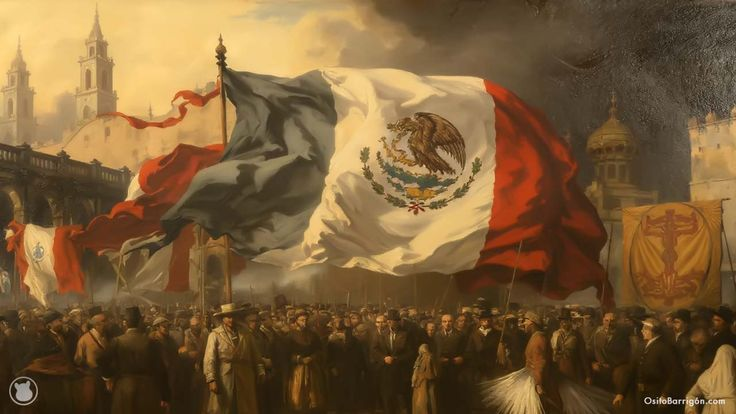

La Independencia de México
Fue el resultado de un conjunto de factores políticos, económicos, sociales e ideológicos
que se desarrolló durante varias décadas

Causas Internas
Desigualdades Sociales
- El sistema de castas coloca a los españoles y descendientes en situaciones privilegiadas
Situación económica difícil
- Los altos impuestos españoles afectaban a comerciales, Mestizos y campesinos sufrían pobreza,
explotación laboral y pagos de tributos
Reformas Borbónicas
- Redujeron la autonomía de las autoridades locales
- Generaron descontentos entre los criollos al limitar su participación política y económica
Causas Externas
Influencia de las ideas de la Ilustración
- Se promovían ideas de libertad, igualdad, justicia y soberanía popular
- Cuestionaban el absolutismo monárquico
- Llegaron a la Nueva España mediante libros, universidades y miembros ilustrados del clero
Invasión Napoleónica a España en 1808
- Napoleón Bonaparte obligó a abdicar al Rey Fernando VII e impulsó a su hermano al trono
Momentos y Acontecimientos destacados
Datos Importantes
- Inició el 16 de Septiembre de 1810
- Encabezada por el sacerdote Miguel Hidalgo y Costilla
Acontecimientos Significativos
- El grito de Dolores es considerado el inicio formal del movimiento
- Una de sus victorias fue que tomaron ciudades como San Miguel el Grande, Celaya
- La toma de la Alhóndiga de Granaditas, en Guanajuato
- Un momento decisivo fue La batalla de Monte de las Cruces-Victoria que abrió el camino hacia la Ciudad de México
Enero de 1811
- Miguel Hidalgo, Ignacio Allende, Juan Aldama y Mariano Jiménez fueron juzgados y ejecutados,
marcando el final de la primera etapa de la Independencia
Tras la muerte de Hidalgo
- José María Morelos y Pavón asumió el liderazgo, proporcionando una organización
política y militar más sólida
El documento Sentimientos de la Nación, presentado durante el congreso de Chilpancingo en 1813,
propuso que:
- La Soberanía residiera en el pueblo y no en el Rey de España
- La América Mexicana debía ser libre e independiente
- Estableció la división de Poderes en Ejecutivo, Legislativo y Judicial
- Promovió la eliminación de las diferencias entre castas
- Planteó la abolición de la esclavitud
- Morelos fue capturado y ejecutado en 1815
- Sus propuestas sirvieron como fundamento para la organización Política de México
- Sus ideas presentaron un avance en la construcción de un proyecto nacional basado en:
- La libertad
- La justicia social
- El respeto a los derechos de la población
- En 1814 Vicente Guerrero continúa la lucha insurgente en el sur del país
- Se fortalece el sentimiento nacional con el apoyo del pueblo y de la Iglesia
- En 1821 Agustín de Iturbide propone el Plan de Iguala:
- Religión, Unión e Independencia
- Se firman los Tratados de Córdoba el 24 de agosto que reconoce la Independencia de México
Recursos complementarios
Video explicativo
En este video se explica el tema de manera sencilla para reforzar lo aprendido.
Canción relacionada
Esta es una canción relacionada con los acontecimientos o ideas principales del tema.